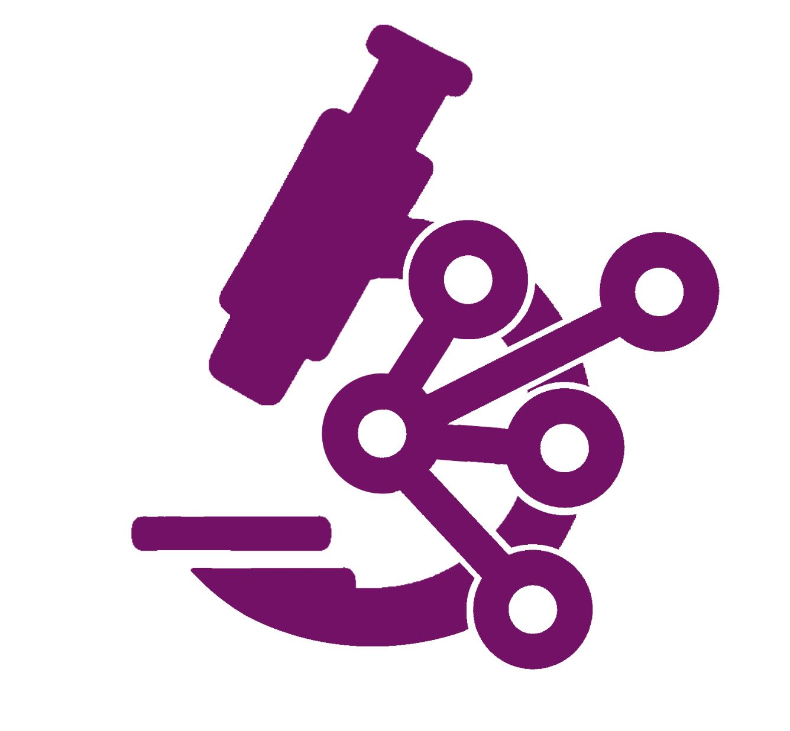
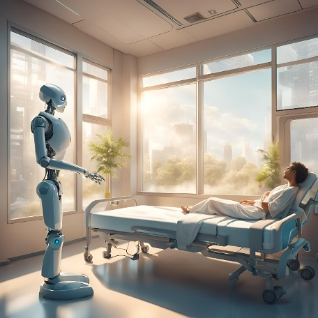

Graduation Project 1 – Pathology Image Classification Using AI
Date:
AI-based pathology image classification using deep learning with a focus on Whole Slide Images.
Compared multiple feature extractors models (KimiaNet, CTransPath, MobileNetV2)

Deep learning classification model for pathology images.
view work
CSC462 - Machine Learning Project
Date:
Built and evaluated machine learning models to predict optimal moves in Connect Four.
Evaluated baseline models and advanced ensemble methods to optimize predictive accuracy.
Model performance evaluation and prediction analysis.
view work
CSC304 – Research Project
Date:
Studied ethical issues of using robots in healthcare, including privacy, safety, cost, unemployment, and patient consent.
Conducted surveys targeting healthcare providers and patients to understand their perspectives.

Survey analysis and ethical considerations findings.
view work